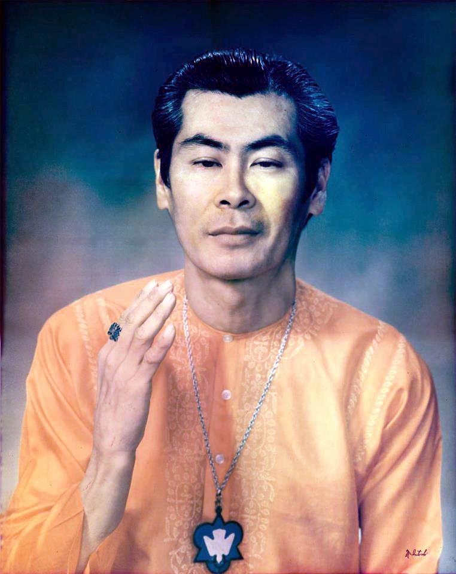
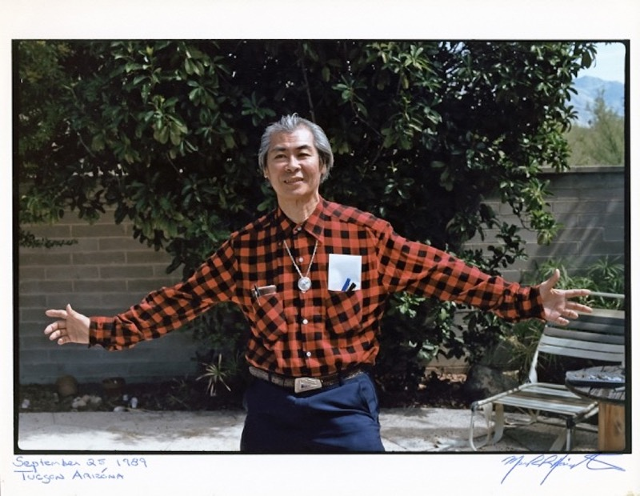

Swami Nitananda Saraswati (Adano Ley)
Thank you Dave McCawley for a cleaned up version of this beautiful photo!

Adano Blessing the Earth

Adano at the Clinic in Houston
Adano Teaching a Class
Adano and John Andre
Adano Picture in the Clinic
Adano and Margaret Mary
Adano and “Sparkle” (Cristen)

Adano with Thomas Smith’s Son, Stuart in 1984
Adano Ley
Adano and Andy
Andy and Mary
Adano from August 1988
Adano driving in the van
Adano performing a wedding at All Faith Fellowship (top) Adano at Thomas Smith’s house in Tyler, TX (bottom)
An attorney from Dallas met Adano in 1969 and he sent some photographs of Adano made in 1972 in Tyler, Texas. What a treasure!

Two more wonderful photos of Adano. Thank you to Lelia for these. She took the first one during one of their 14 hour nine day seminars with Adano in Massachusetts around 1972.
Another photo, probably from around the same time.
From a “Life Stress” course Adano gave in the 1970s. Another wonderful photo courtesy of Lelia Saunders. Thank you again Lelia! Thanks to Mark Harrington, we have more information on who is in the picture. He writes, “my mother Sylvia Harrington is standing to the far left, in the striped pants, and next to her is Eva Jane McKinney and that was from Rockland, MA group where to the right of Margaret Berry and Adano is the host of that group Bob O’Donnell, who worked with my mother at Honeywell in Wilmington MA, invited her into that group in 1972, and was initiated shortly thereafter.” And even more information from Lelia Saunders via Marjorie Morgan, can be found at this link.
{kind=link}
Lelia writes that this photo was “taken at the White Crow Bookstore where Adano taught a class in Massachusetts around 1974. The owners of the bookstore are on the right.”
Mark also sent the photos below and wrote, “I met Adano my first time in August of 1974 and here is a photo my mother just found today taken in the backyard at Rockland, MA when Adano was performing a wedding ceremony. My mother took this photo and most of the people in that group were from the greater Boston area, but some could have been followers that traveled to hear all of the Satsangs and attend the workshops.” Thank you again Mark!
Adano and Margaret Berry in 1975 in Rockland. Photo courtesy of Mark Harrington.
Adano on September 25, 1989 in Tucson. Photo courtesy of Mark Harrington.

Mark also sent this photo and says, “Here is the glass tiffany style All Souls Fellowship stained glass creation that hung in the living room window in Rockland, MA at Bob O’Donnell’s house. As for the creator of the glass art work, I haven’t a clue who produced that but everyone back then had those symbols in neck medallion form that Adano had made somewhere.”
Adano Group Photo in Tucson in the late 1980s (from Dawn Sampson). Left to right top row: Chris (Fernando) Cardenoza, Dawn Sampson, Adano Ley, Melissa Wolf, Angie Cardenoza (blonde at the very top), Pam Martin, Jodi Gore. Then on left bottom is Atom Bergstrom and David Knudson (lying down). A note on the back of the photo from Margie reads, “There is so much Love in this room, please get together.”
Adano Teaching at Jodi’s House.
Taken at Retreat Lodge in Virginia in 1973 or 1974.
Taken in Massachusetts in 1974 or 1975.
Adano at Gynn Flyn’s house in E. Bridgewater, MA in 1975 (from Marjorie Morgan).

1972 - Quincy, MA
April 1972 - Brockton, MA
April 25, 1972 - Brockton, MA
1972 - Fellowship Hall in Tyler, TX
Adano Ley
Adano at Christmas in Massachusetts in 1972, 1973, or 1974.
Photo taken at a retreat in Virginia. Adano was wearing an outfit that Margaret bought back from Beas, India.
Adano Ley
Margie’s house in Brookston, MA around 1974 at a retreat.
“Bliss at the feet of the Master” in 1973 or 1974. Margie’s daughter Jennifer.
Virginia retreat at a hunting lodge. Adano, Patty, Tina, Margie, and June.
December 1985 around the 14th in Carpinteria at Hugo’s.
Adano, Margie, and Hugo food shopping in Carpentaria, CA in the 1980s.

The Stairway to SUCCESS